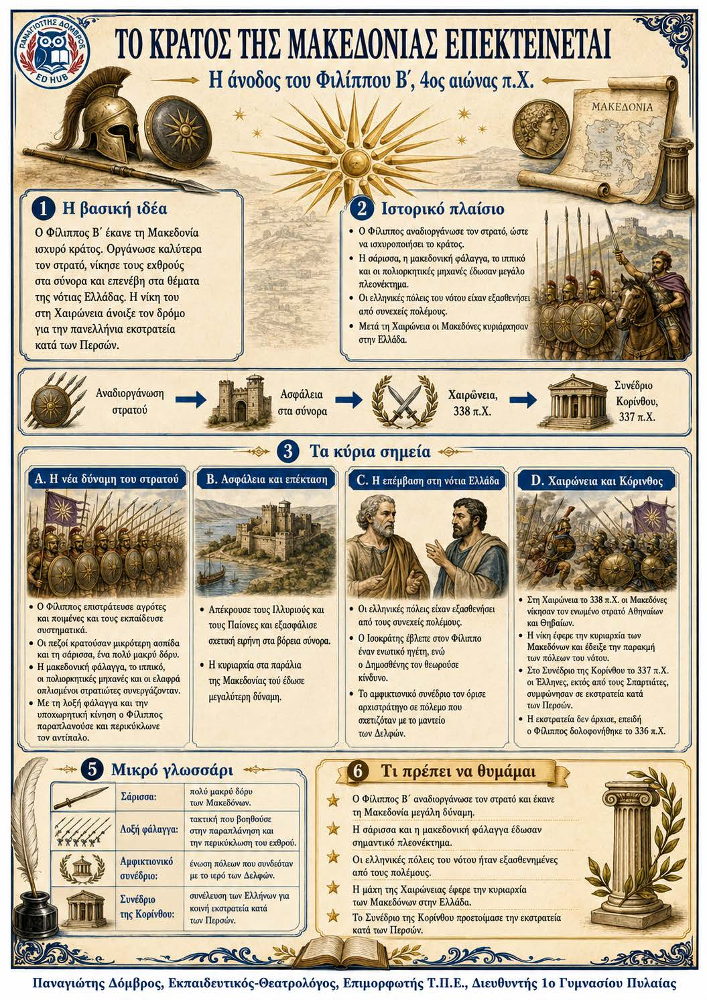

Πληροφοριογράφημα ενότητας
Το πληροφοριογράφημα αυτής της ενότητας δεν έχει ανέβει ακόμη. Οι σημειώσεις παραμένουν πλήρως διαθέσιμες.

Η άνοδος του Φιλίππου Β΄, 4ος αιώνας π.Χ.
Ο Φίλιππος Β΄ μετέτρεψε τη Μακεδονία σε μεγάλη δύναμη. Αναδιοργάνωσε τον στρατό, εξασφάλισε τα βόρεια σύνορα και επενέβη στα θέματα της νότιας Ελλάδας. Μετά τη νίκη στη Χαιρώνεια, οι περισσότερες ελληνικές πόλεις δέχτηκαν την ηγεσία του και συμφώνησαν σε εκστρατεία εναντίον των Περσών.
